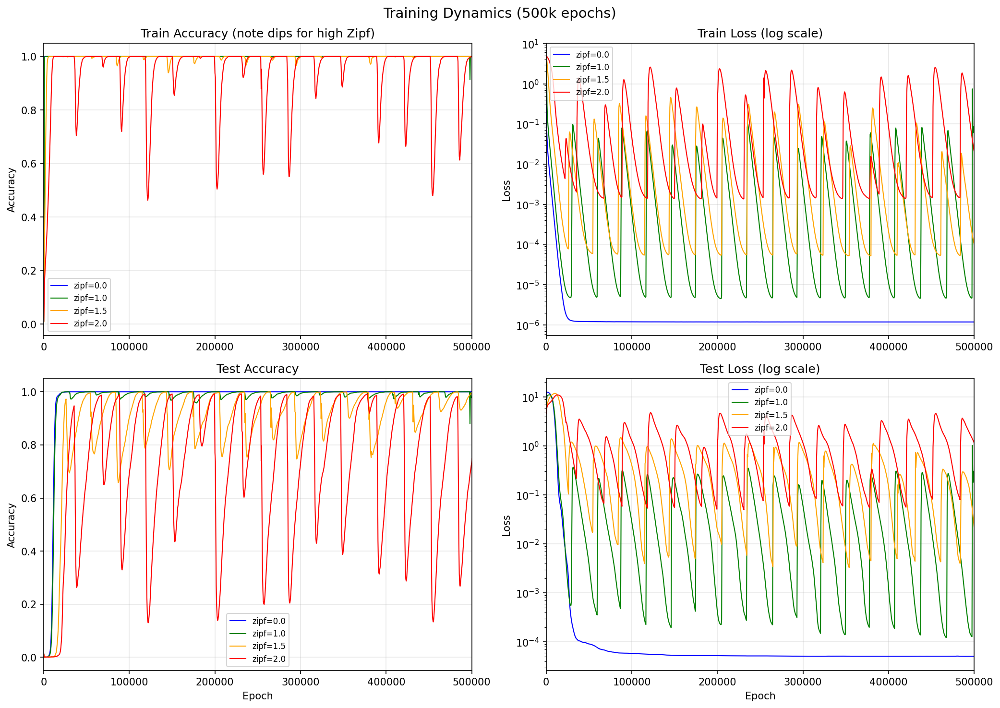
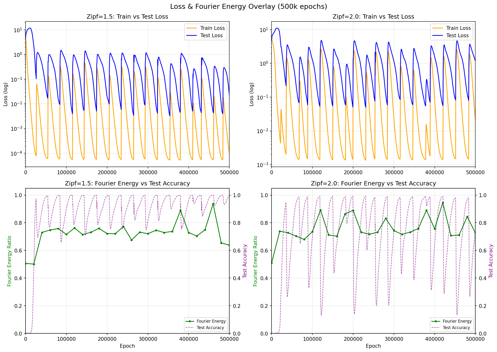
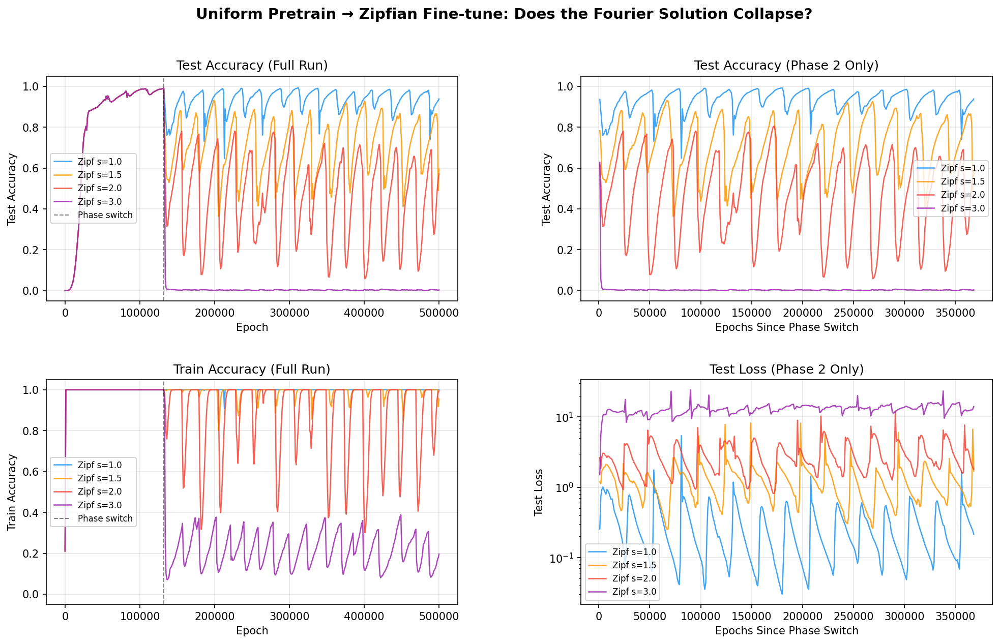

One of the reasons for the successes of the scaling era of AI has been passive regularization: throwing massively complicated datasets at underparameterized models and letting the model decide what features to encode simply works better than trying to hand-design features. Yet the passive nature of such regularization makes it difficult to test whether the abstractions it creates reflect genuine generalization or memorization. Indeed, we have reason to suspect1 that much of what we think of as generalization contains elements of memorization under the hood.
In order to test new mechanisms for understanding generalization, we should like to have a type of toy problem where naive methods of model training are controllably and interpolatably suboptimal for learning a generalized vs memorized solution. Ideally, we could turn a dial and smoothly vary how much the training signal fights against the correct solution.
One of the best such starting points in ML is the phenomenon of grokking over modular arithmetic: training a model on examples of modular addition for a long time until it stops merely memorizing the training examples and generalizes to all modular addition examples. This occurs because the general solution — a Fourier basis representation of modular arithmetic — represents a flatter, lower-norm optimum in weight space. Weight decay selects for this optimum by penalizing the larger weights required for memorization.
In the standard grokking task, there's a sense in which the dataset optimally “points to” the correct solution. Each training example can be satisfied equally well by both the memorizing and the generalizing solution, so once the model has memorized the training set, the task loss gradient drops to approximately zero. At that point, weight decay is the only remaining optimization signal. And because the Fourier solution has lower weight norm than the memorizing solution, weight decay pushes the model toward generalization. The grokking transition is driven by weight decay alone, operating in a near-zero-task-gradient regime.
Of course, real-world tasks are much more difficult than memorizing a short list of modular addition data points, so we would ideally like a toy problem that meets two criteria:
Standard grokking on modular arithmetic satisfies (1) but fails (2): after memorization, the task has nothing left to say. The model drifts toward the Fourier solution on weight decay alone,2 and this drift is slow (thousands of epochs) but monotonic and stable.3
One way to inject persistent task gradients into grokking is to weight the loss of each training example according to a non-uniform distribution. Language, user behavior, and many natural phenomena roughly follow Zipf's law:
\[P(k) \propto \frac{1}{k^s}\]
where \(s\) is the Zipf exponent. At \(s = 0\), all examples are equally weighted (standard grokking). As \(s\) increases, a shrinking handful of examples dominate the gradient. Consider the effective sample size \(1 / \sum_i p_i^2\), where \(p_i\) are the normalized weights — a measure of how many examples meaningfully contribute to the gradient. With \(p = 97\) and a 30% train split (2,822 training pairs):
| Zipf Exponent | Weight Ratio (max/min) | Effective Sample Size | Top 10% Mass |
|---|---|---|---|
| 0.0 (uniform) | 1x | 2,822 | 10% |
| 1.0 | 2,822x | 44 | 73% |
| 1.5 | 149,912x | 5.5 | 97% |
| 2.0 | 7,963,684x | 2.5 | 99.8% |
At \(s = 1.5\), just 2 training pairs account for roughly 50% of the total gradient signal: the top-ranked pair carries about 38% of the weight, and the second about 14%.
Crucially, Zipfian weighting does not change what the optimal solution is. The Fourier solution is still correct for all examples, including the high-weight ones, which come from the same \((a + b) \bmod p\) task. The optimal loss is zero for every example regardless of weighting.
What changes is the geometry of the loss landscape. Under uniform weighting, averaging gradients over 2,822 samples means the only efficient way to reduce loss on all of them is to discover the Fourier structure. Under Zipfian weighting, 50% of the gradient says “fit THESE TWO perfectly” — and fitting two samples perfectly can be done without learning any structure at all.
We train a 2-layer MLP (hidden dims [128, 128], ~54k parameters) on \((a + b) \bmod 97\) with 30% train / 70% test split, using AdamW (lr = \(10^{-3}\), weight decay = 1.0) and full-batch gradient descent. As we increase the Zipf exponent, grokking becomes dramatically harder:
| Zipf Exp | First ≥95% Test | Time above 95% | Behavior |
|---|---|---|---|
| 0.0 | 14,000 | 97% | Clean grokking |
| 1.0 | 15,500 | 97% | Slight test accuracy oscillations |
| 1.5 | 25,000 | 44% | Unstable oscillations |
| 2.0 | 61,000 | 21% | Severe instability |

Zipfian weighting causes both test and train accuracy to repeatedly collapse during training. The competing objectives of memorization and generalization cause the model to learn a hybrid solution: mostly Fourier structure plus small memorization corrections for the high-weight samples. This hybrid is unstable — the corrections periodically amplify residual errors, corrupt the underlying structure, and initiate a large-scale representational collapse.
Tracking Fourier energy — the fraction of logit variance captured by the key trigonometric frequencies of the Fourier solution — reveals a limit cycle:

The asymmetry is striking: collapses take ~50 epochs, while recovery takes ~20,000. The model spends most of its time painstakingly climbing toward the correct solution, only to fall off it almost instantaneously. This is what we call the Sisyphean dynamics.
Weight decay works by adding a term \(-\lambda\theta\) to each parameter update — a restoring force proportional to the parameter's current magnitude. This is what makes it effective at suppressing memorization during grokking: memorized solutions require large weights, and weight decay penalizes large weights.
But consider what happens once the model has actually arrived at the Fourier solution. Decompose the model's parameters into two components: \(\theta_F\), the Fourier component aligned with trigonometric structure, and \(\theta_M\), the memorization component fitting specific high-weight samples. At the correct solution, \(\theta_F^* \neq 0\) and \(\theta_M^* \approx 0\). Weight decay's restoring force on the memorization component is proportional to \(\theta_M\) itself — so at the solution, where \(\theta_M \approx 0\), this force is essentially zero.
Meanwhile, the Zipfian gradient doesn't vanish at the solution. Even when the model is perfectly representing the Fourier structure, the top-weighted training pairs still generate a finite push toward memorization corrections, because Zipfian weighting amplifies their residual errors into a meaningful gradient signal. Weight decay, in contrast, provides its strongest defense far from the correct solution and its weakest defense at the correct solution.
More precisely, the dynamics of the memorization amplitude \(m = \|\theta_M\|\) follow:
\[\frac{dm}{dt} = -\lambda m + \gamma(m) \cdot m\]
Near the Fourier solution, \(\gamma > \lambda\): the memorization gradient overwhelms weight decay's vanishing restoring force. Memorization grows, which corrupts the Fourier structure, which makes memorization more attractive — a positive feedback loop. Far from the Fourier solution, \(\gamma < \lambda\): weight decay dominates and pulls the model back.
This is the structure of a relaxation oscillator — slow recovery (exponential decay under weight decay, \(\sim 10^4\) epochs) punctuated by fast collapse events (exponential growth under positive feedback, ~50 epochs). The model can repeatedly find the correct solution but never maintain it.
The saddle point analysis makes a strong claim: the instability is a property of the loss landscape at the Fourier solution, not an artifact of how the optimizer gets there. A model that cleanly converged to the Fourier solution under uniform weighting — with no Zipfian pressure in its history — should still collapse once Zipfian gradients are turned on, with severity scaling monotonically with Zipf exponent.
We test this with a two-phase experiment. Phase 1: train with uniform weighting (\(s = 0\)) until 99% test accuracy, placing the model at the converged Fourier solution via a path with no Zipfian pressure whatsoever. Phase 2: switch to Zipfian-weighted loss and continue training.

| Zipf Exp | Mean Test Acc (Phase 2) | Std | Time Below 50% |
|---|---|---|---|
| s=1.0 | 94.8% | 4.3% | 0% |
| s=1.5 | 73.2% | 12.4% | 5.1% |
| s=2.0 | 44.4% | 19.1% | 51.7% |
| s=3.0 | 0.3% | 1.5% | 99.9% |
The Fourier solution collapses under Zipfian pressure even starting from a fully converged state. At \(s = 1.5\), the same Sisyphean limit cycle appears — the model repeatedly climbs toward ~93% then drops to ~35%. At \(s = 3.0\), the model immediately falls to ~0% accuracy and never recovers: the memorization gradient is so strong that weight decay can never pull the model back.
The severity scales monotonically with Zipf exponent, exactly as the saddle point analysis predicts. A path-artifact explanation would predict stability here — the model already found the solution, there's nothing left to grok. Instead, the model is expelled from the solution it already occupies. The instability is a property of the loss landscape geometry at the solution, not of how the model got there.
Zipfian grokking demonstrates a concrete case where “wide” abstractions — those that cover a large share of the optimization signal without capturing causal structure — actively prevent “deep” ones — those that reflect the data-generating process itself — from being maintained. The oscillatory dynamics are particular to this toy problem, but the mechanism that produces them — competition for finite representational capacity, arbitrated by gradient magnitude — is not.
In Zipfian grokking, the “wide” abstraction is memorization of the top few samples — it covers 50% of the gradient cheaply. The “deep” abstraction is the Fourier solution — it covers everything but requires structured representations. Memorization corrections don't just consume capacity; because they modify the same weights that encode the Fourier structure, they actively destabilize it.
The same dynamic plausibly extends to large-scale pretraining, where models must encode shallow and deep abstractions in superposition. While high-dimensional networks can pack features into orthogonal subspaces, there is a hard upper bound on how many fit in finite parameters4, and real-world models are still dramatically underparameterized relative to their training data5. Abstraction depth is likely limited by capacity competition between abstractions themselves.
Of course, in real-world settings, abstraction interference is likely to look different than in the Zipfian grokking problem. In the Zipfian grokking problem, the attractor towards wide abstractions is coherent (two dominant training pairs pulling in a consistent direction at \(s=1.5\)) and the model is overparameterized relative to the dimensionality of its training data, so the result is oscillatory dynamics ad infinitum. In real-world settings, the attractor towards wide abstractions is diverse and incoherent, and the models are dramatically underparameterized relative to the complexity of their training data. To the extent that abstractions are formed during pretraining rather than post-training,6,7 the same mechanisms would manifest not as oscillatory collapse but as a soft ceiling on abstraction depth.
Another way of viewing this: passive regularization mechanisms approximate the minimum description length (MDL) of the dataset, which may overlap with but isn't necessarily the same as the minimum description length of the data-generating process. The two diverge whenever the dataset is finite, skewed, or contains spurious correlations, which it always will, to some degree. Indeed, this suggests a lens through which to view neural scaling laws: scaling helps by increasing the effective sample size and diluting distribution skew — making the dataset's MDL solution closer to the DGP's MDL solution.8
Currently, we elicit the deepest abstractions using post-training (RLVR, RLHF, and similar), which is essentially paying for supervision on the types of abstractions we would like the model to have via domain-specific process supervision or human judgment.
Ideally, we should like a model that is capable of “seeing through” the statistical properties of its dataset based on its own conceptions about what is causally relevant about its environment. This would be a form of abstraction supervision that is fully autonomous and scalable in the same way that pretraining is autonomous and scalable. Some candidates for such processes might be: direct causality modeling, measuring the degree of predictivity that hypotheses have, evolutionary processes that penalize spurious representations,9,10 autonomous self-critique, and supervision from robustly aligned value functions.11
The Zipfian grokking task provides a test bed where the divergence between the shortest description of a dataset and the shortest description of its generating process can be tuned precisely. If future models can learn to probe their environment for causal structure rather than passively absorbing statistical regularity, this task ought to reveal it.
@article{gilley2026zipfiangrokking,
title = {Why you should care about Zipfian grokking},
author = {Gilley, Jasper},
year = {2026},
month = {March},
url = {https://jagilley.github.io/zipfian-grokking.html}
}